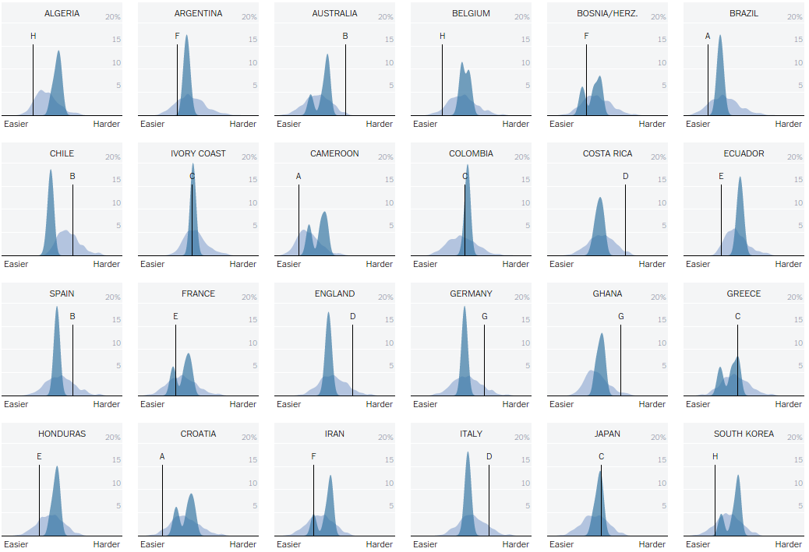

This visualization provides the overview of the worldcup 2014 tournament as well as comprehensive match details. To highlight interesting moments, it also used social media data to detect the crowd’s attention.
The visualization shows tweet activity against for each team that participated in the championship and other match specific information.
The visualization can be found here
Krist Wongsuphasawat and Kang Tu from Twitter Analytics team
The data is collected through twitter streaming API
To explore the data by team, use the "Highlight" dropdown to focus on any particular team. Using the buttons on top right, you can explore how the tournament unfolded on Twitter (Tweets per minute and Tweets during the match) or how it unfolded on the pitch (goals, yellow cards, and red cards).
User can use the dropdown at the top left of the application to select his team
This masks all the other teams and just highlights the selected team's participation throughout the tournament
The crests and troughs on the visualization of particular match represents the tweet activity
User can change modes by selecting required data view on top right corner of the visualization
User can click on any match of selected team
On selecting particular match we get a pop-up showing a worldmap that shows all the countries and the team they have tweeted
User who did not follow WorldCup can get a full picture of tournament in single glance
The visualization has ability to reveal the data at several levels of detail, from a broad overview to the fine structure(by selecting particular team)
Color coding for the entire visualization is great and visually appealing (It is in match to the uniform used by the teams)
Visualizing each match as a pair of area chart is really innovative. The timelines are oriented vertically to make it easy to add labels
Clicking on any team will fade out timelines of other teams and therefore highlight the selected team. This way users can follow the path of each team easily
The popups on selecting particular match gives more details like:
Heat map showing which part of the world is tweeting about which team
Who are the top tweeted players for each team
The visualization presents many numbers in a small space
Ex: The designers effectively used the same data to show multiple visualizations like:
Tweets per minute
Tweets during the match
Goal summary
Yellow cards and Red cards
The usage of vertical scrolling could be clearly avoided if the entire visualization is changed to Landscape mode
When all teams information is shown, it looks like it's too much data to understand
The entire visualization could be divided in to two separate tabs one for group stage matches and other for knockout matches
A single graph for each team showing how it performed throughout the tournament would have been much better visualization to compare performance between all the teams. Now it becomes really hard to compare between 2 teams for entire tournament
Some type of visualizations like below wold have been a wise choice for comparison

The heat map is kind of misleading. I first thought it shows the countries that are supporting respective teams. But the heat map shows the teams that users in each country just mentioned. They may be supporting the team or making fun of the team as in the case of Brazil vs Germany match. So it needs sentiment analysis
Zoom option could have made the visualization more interesting. The visualization when zoomed out could have shown only scores and when zoomed in or expanded could have shown full match details
Generalizing the same visualization to other kind of games can be challenging. The visualization worked for Football because of its strict 90 minute time frame. This might not be the case with other games like Tennis